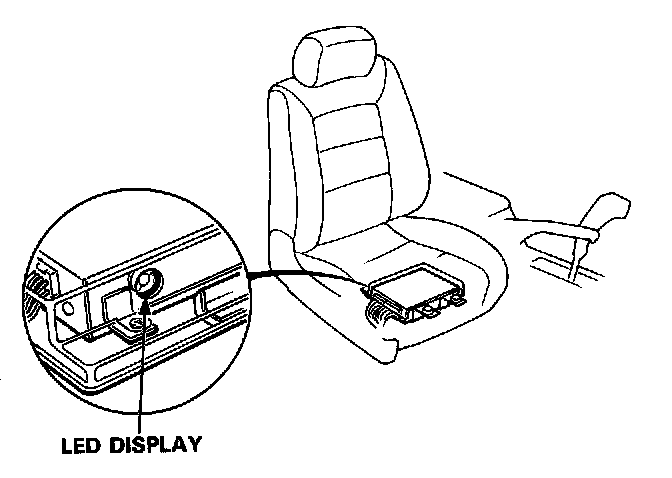
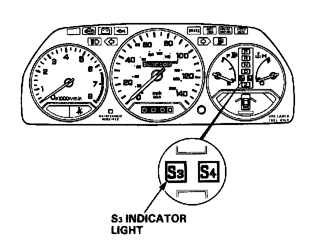

Displaying & Reading Trouble Codes
TROUBLESHOOTING PROCEDURES

The A/T Control Unit has a built-in self-diagnosis function. The S3 indicator light in the gauge assembly and LED display on the A/T control unit blink when the A/T control unit senses an abnormality in the input or output systems. The number of blinks from the LED display varies according to the problem, which can be diagnosed by counting the number of blinks.
For problem diagnosis count the number of blinks from the LED display as shown on the Symptom-to-Component Chart. DTC List - Transmission Control
If no abnormality if found from your inspection, refer to Diagnosis By Symptom. Symptom Related Diagnostic Procedures
When the ignition switch is turned ON, the S3 indicator light comes on for about two seconds regardless of whether there is a problem. The S3 indicator light will also come on when in S3 mode.
If there is a system problem, the S3 indicator light will come on and continue to blink until the ignition key is turned OFF. When the ignition key is turned ON again, the S3 indicator light will not blink again for the original problem. But if the A/T control unit senses the original abnormality again with ignition switch ON, the S3 indicator light will blink again for the original problem. Therefore, even though the S3 indicator light does not come on when turning the ignition key ON, check the LED display for automatic transmission problem diagnosis.
Since the LED problem code is retained in memory, it will blink again whenever the ignition key is turned on. If the LED problem code is not memorized, check the following causes:
- Check the Clock fuse (7.5A) in the dash fuse box or the ILLUMI fuse (40A) in the under-hood relay box.
- Check for an open circuit in the WHT/YEL wire between the Clock fuse (7.5A) and A/T control unit A17 terminal.
After making repair, disconnect the Clock fuse (7.5A) in the dash fuse box for more than ten seconds to reset LED display memory.